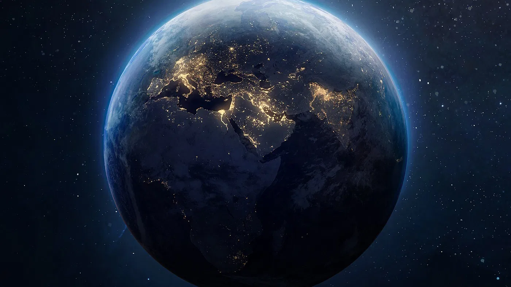

Disciplinas
Física
Química
Biologia
Nessa atividade, tinhamos que resumir o vídeo no YouTube "Cada vez mais rápido", onde tratava da sociedade humana desde o inicio até os tempos atuais, onde estamos gastando todos nossos recursos naturais. Clique aqui pra assistir
Nessa atividade, nós fomos para o laboratório de química, tentar extarir o DNA de um morango, depois tivemos que documentar tudo
Nessa atividade, nós fomos vagar pelo Senac tirando fotos de plantas, categorizando-as em grupo, nome científico, etc